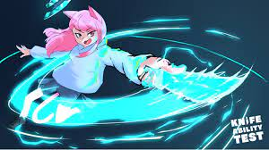

KAT (Knife Ability Test) is a player-vs-player deathmatch Roblox game developed by Fierzaa. Its objective is to kill targets and other players for rubies. The game utilizes elements from Murder Mystery 2 and The Mad Murderer, including knives, guns, and map styles. It has added in Trading And cool Powers. It also has a currency called Gems.
